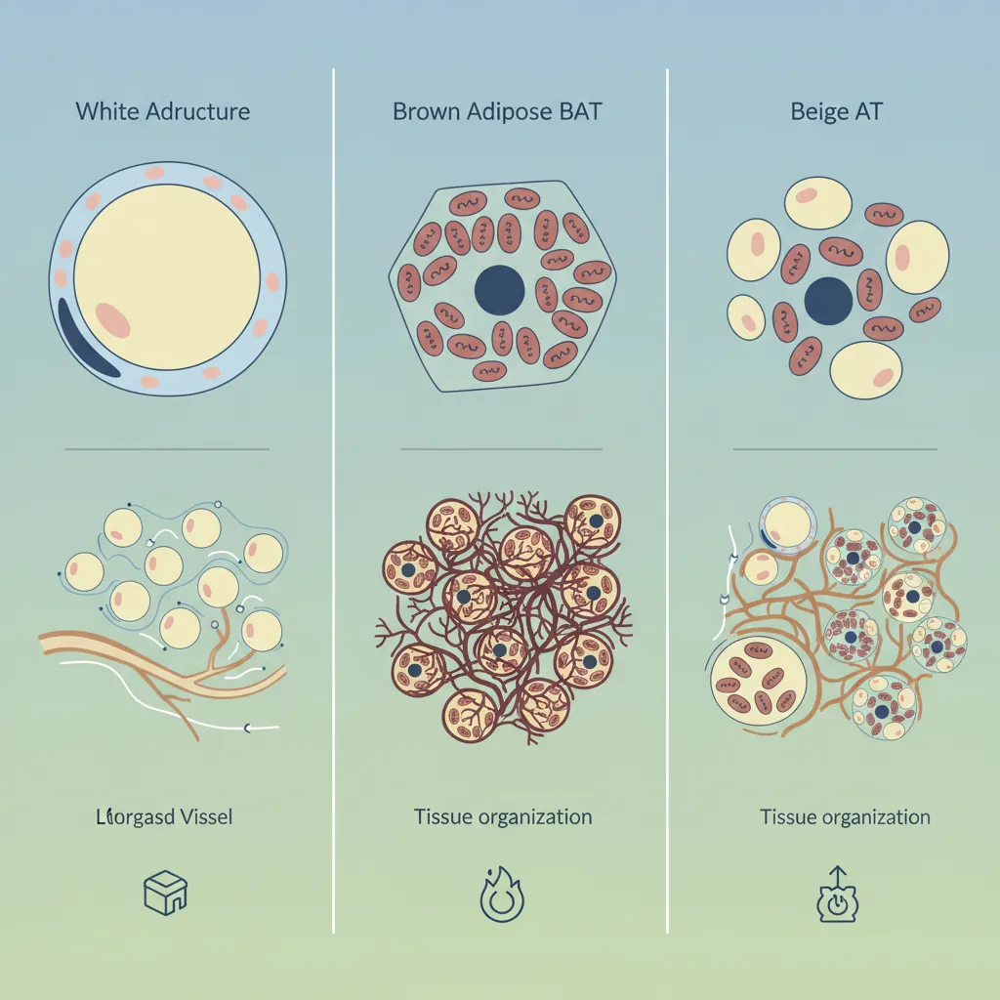
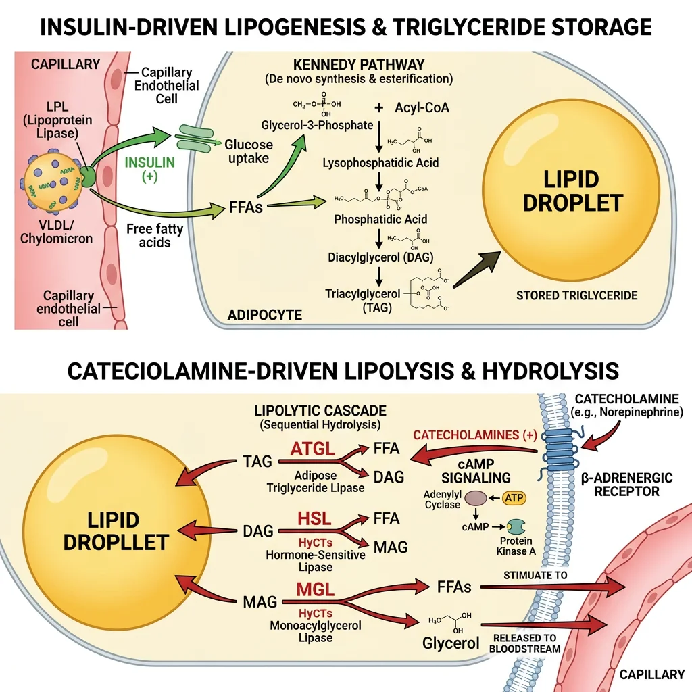
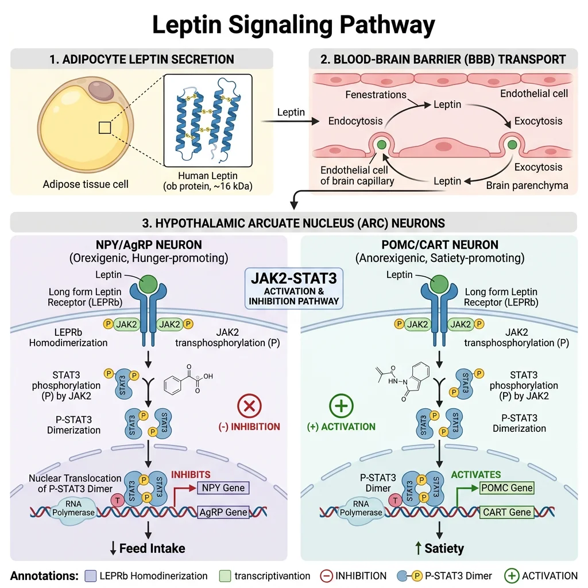
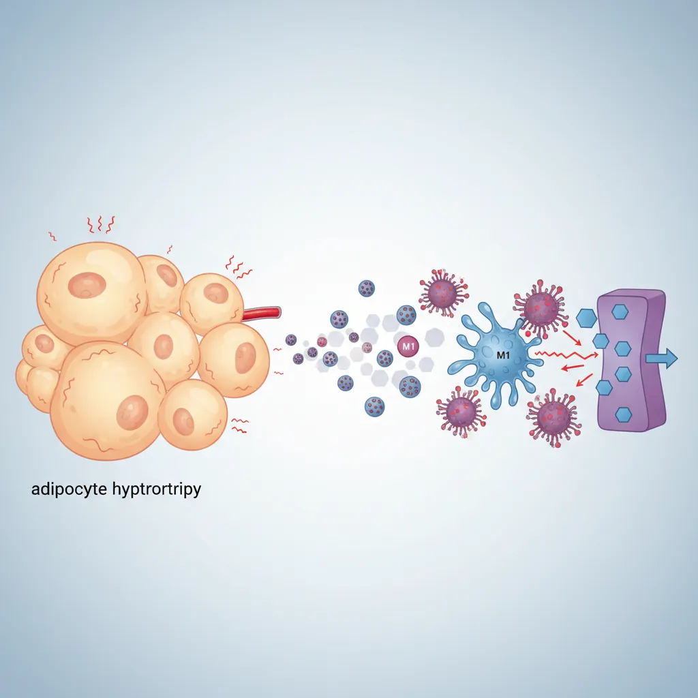
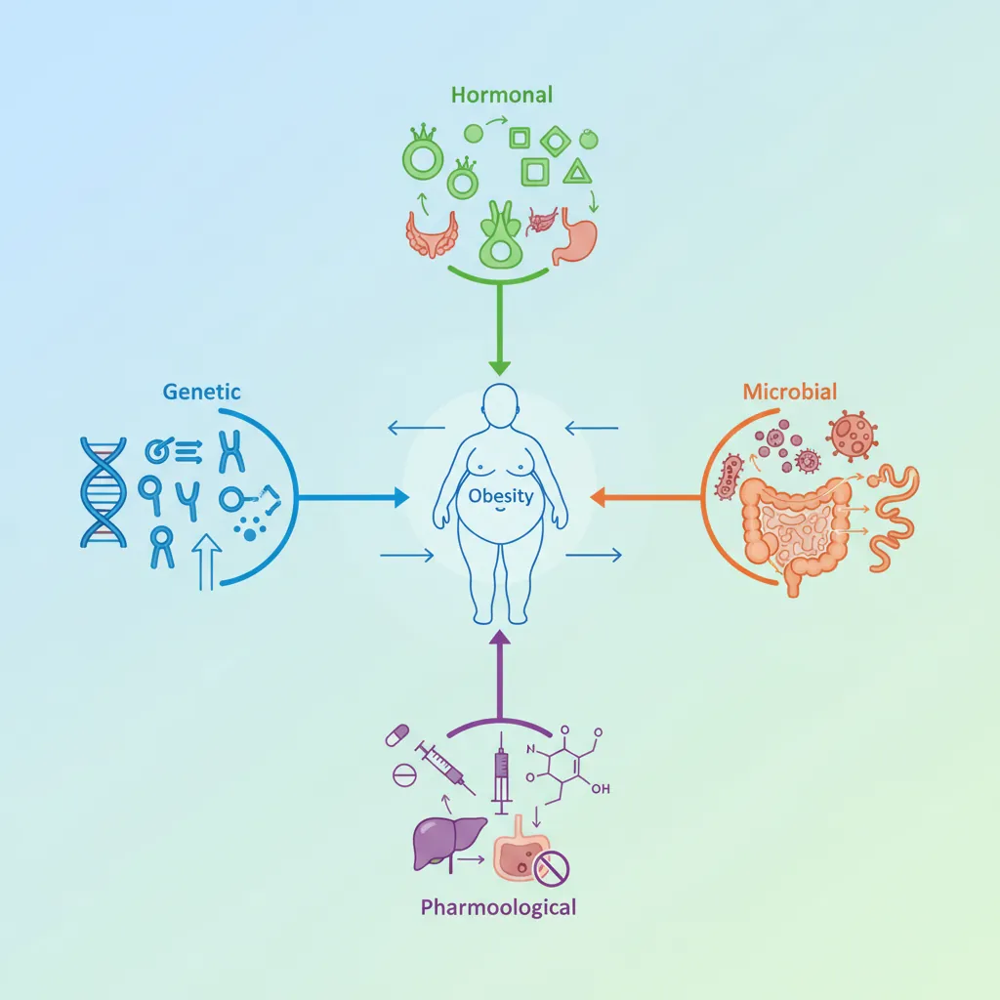

Biochemistry Mastery
Biological Chemistry Fundamentals
Atoms, bonds, functional groups, thermodynamicsWater, pH & Biological Buffers
Water polarity, pH, Henderson-Hasselbalch, blood buffersAmino Acids & Protein Structure
Amino acid classes, peptide bonds, protein foldingEnzymes & Catalysis
Kinetics, Michaelis-Menten, inhibition, regulationCarbohydrates & Lipids
Sugars, glycogen, fatty acids, cholesterol, membranesMetabolism & Bioenergetics
ATP, glycolysis, gluconeogenesis, redox carriersCitric Acid Cycle & Oxidative Phosphorylation
Acetyl-CoA, ETC, ATP synthase, oxygen dependenceSignal Transduction & Cell Communication
GPCRs, kinases, calcium, hormone cascadesNucleic Acids & Gene Expression
DNA, replication, transcription, translation, epigeneticsBrain & Nervous System Biochemistry
Neurotransmitters, ion gradients, myelin, neurodegenerationHeart & Muscle Biochemistry
Cardiac metabolism, actin-myosin, energy systemsLiver Biochemistry
Glucose homeostasis, detox, urea cycle, bileKidney Biochemistry & Acid-Base
pH regulation, ion transport, hormonal functionsEndocrine System Biochemistry
Hormone classes, signaling, glucose & stress controlDigestive System Biochemistry
Gastric acid, enzymes, bile, absorption, microbiomeImmune System Biochemistry
Antibodies, cytokines, complement, oxidative burstAdipose Tissue & Energy Balance
Triglycerides, lipolysis, leptin, obesityTissue-Specific Metabolism
Fed vs fasting, organ fuel selection, starvationMolecular Basis of Disease
Diabetes, cancer metabolism, neurodegenerationClinical Biochemistry & Diagnostics
Blood tests, liver/kidney markers, lipid panelsAdipose Tissue Types
Adipose tissue is far more than a passive storage depot for fat — it is a dynamic endocrine organ that regulates energy balance, glucose homeostasis, inflammation, and reproduction through secretion of hormones called adipokines. The human body contains several functionally distinct types of adipose tissue, each with unique developmental origins, cellular architecture, and metabolic roles. Understanding these distinctions has revolutionised our view of fat from an inert "spare tyre" to a metabolically active tissue at the centre of whole-body energy regulation.

The Paradigm Shift — Fat as an Endocrine Organ
Before the 1994 discovery of leptin by Jeffrey Friedman, adipose tissue was considered a passive energy reserve. Leptin's identification as a fat-derived hormone that signals satiety to the brain established adipose tissue as a bona fide endocrine organ — comparable to the thyroid or adrenal glands. Today, we know that adipocytes secrete over 600 bioactive molecules (adipokines, lipokines, exosomal miRNAs) that communicate with virtually every organ system.
White Adipose Tissue (WAT)
White adipose tissue (WAT) constitutes 95% of total body fat and is the primary energy storage organ. White adipocytes are large cells (50–150 μm) containing a single (unilocular) lipid droplet that occupies >90% of cell volume, pushing the nucleus and cytoplasm to the periphery — the classic "signet ring" appearance on histology. WAT is distributed in two major compartments:
| Feature | Subcutaneous WAT (scWAT) | Visceral WAT (vWAT) |
|---|---|---|
| Location | Under skin (gluteal, femoral, abdominal subcutaneous) | Around organs (omental, mesenteric, retroperitoneal) |
| Vascular drainage | Systemic circulation | Portal vein → liver (direct hepatic FFA delivery) |
| Metabolic activity | Lower lipolytic rate; more insulin-sensitive | Higher lipolytic rate; more insulin-resistant |
| Inflammatory profile | Anti-inflammatory (more Tregs, M2 macrophages) | Pro-inflammatory (M1 macrophages, TNF-α, IL-6) |
| Clinical correlation | "Pear-shaped" distribution; metabolically protective | "Apple-shaped" distribution; increased cardiovascular risk |
| Adipokine profile | Higher adiponectin secretion | Higher resistin, IL-6, PAI-1 secretion |
The Portal Hypothesis — Why Visceral Fat Is Dangerous
Visceral adipose tissue drains directly into the portal vein, delivering free fatty acids (FFAs) and pro-inflammatory cytokines straight to the liver. Elevated portal FFAs promote hepatic insulin resistance (FFAs activate PKCε, which phosphorylates the insulin receptor on inhibitory serine residues), increase VLDL-triglyceride production, and impair hepatic glucose suppression. This portal hypothesis explains why waist circumference (reflecting visceral fat) is a better predictor of cardiovascular disease than BMI alone — and why metabolically healthy obese individuals tend to store fat subcutaneously rather than viscerally.
Brown & Beige Adipose Tissue
Brown adipose tissue (BAT) is a thermogenic tissue whose primary function is heat production rather than energy storage. Brown adipocytes are smaller than white adipocytes and contain multiple (multilocular) small lipid droplets and abundant mitochondria (whose iron-containing cytochromes give the tissue its brown colour). The defining molecular feature of BAT is uncoupling protein 1 (UCP1, thermogenin) — a proton channel in the inner mitochondrial membrane that dissipates the proton gradient as heat instead of ATP.
UCP1 — The Molecular Furnace
In normal oxidative phosphorylation, the proton gradient drives ATP synthase. UCP1 provides an alternative pathway for protons to re-enter the mitochondrial matrix, bypassing ATP synthase entirely. The energy stored in the gradient is released as heat through the process of non-shivering thermogenesis. UCP1 is activated by long-chain fatty acids (released by β-adrenergic stimulation of lipolysis) and inhibited by purine nucleotides (ATP, GDP). Cold exposure → sympathetic nervous system → noradrenaline → β₃-adrenergic receptors on brown adipocytes → cAMP → PKA → HSL activation (liberates fatty acids) + transcriptional upregulation of UCP1 via PGC-1α/PPARγ. A fully activated brown adipocyte can generate 300 watts/kg of tissue — an extraordinary metabolic rate.
Beige (brite) adipocytes are a distinct cell type that resides within WAT depots and can be induced to express UCP1 through a process called "browning". Unlike classical brown adipocytes (which derive from Myf5⁺ precursors shared with skeletal muscle), beige adipocytes derive from Myf5⁻ precursors and express unique markers (TMEM26, CD137, TBX1). Browning is stimulated by cold, exercise (via irisin — a myokine released from skeletal muscle PGC-1α cleavage of FNDC5), and certain dietary compounds (capsaicin, resveratrol). The therapeutic potential of browning for obesity treatment remains an active research frontier.
PET-CT Reveals Brown Fat in Adult Humans
For decades, BAT was thought to be relevant only in neonates (who need non-shivering thermogenesis because they cannot shiver effectively). In 2009, three landmark studies published simultaneously in the New England Journal of Medicine used ¹⁸F-FDG PET-CT scanning to definitively demonstrate that metabolically active BAT exists in adult humans — concentrated in the supraclavicular, cervical, paravertebral, and perirenal regions. The studies showed that BAT activity was inversely correlated with BMI (lean individuals had more active BAT) and was stimulated by cold exposure. This discovery reignited interest in BAT as a therapeutic target for obesity: if brown fat could be activated or expanded, it could "burn" excess calories as heat.
Triglyceride Storage & Lipolysis
Adipose tissue functions as the body's primary energy reservoir, storing and releasing fatty acids in response to hormonal signals that reflect whole-body energy status. A 70 kg adult with 15% body fat stores approximately 10.5 kg of triglyceride — representing ~94,500 kcal of potential energy, enough to sustain basal metabolism for over 40 days. This enormous energy capacity (compared to ~900 kcal in glycogen) explains why fat is the evolved solution for long-term energy storage.

Lipogenesis — Filling the Tank
In the fed state, insulin drives triglyceride storage through multiple coordinated mechanisms:
- Lipoprotein lipase (LPL) activation: Insulin upregulates LPL on adipocyte capillary endothelium, which hydrolyses circulating triglycerides from chylomicrons and VLDL, releasing FFAs for uptake via CD36/FATP transporters
- De novo lipogenesis: Excess glucose → acetyl-CoA → malonyl-CoA → palmitate (via fatty acid synthase/FAS). SREBP-1c (transcription factor activated by insulin via PI3K/Akt/mTORC1) upregulates FAS and ACC
- Glycerol-3-phosphate production: Glucose metabolism provides the glycerol backbone (glycerol-3-phosphate from DHAP via glycerol-3-phosphate dehydrogenase) — adipocytes lack glycerol kinase, so they depend on glucose for the glycerol backbone
- Esterification: Acyl-CoAs + glycerol-3-phosphate → TAG via the Kennedy pathway (GPAT → AGPAT → PAP/lipin → DGAT)
Lipolysis — Emptying the Tank
During fasting, exercise, or stress, catecholamines and glucagon stimulate triglyceride hydrolysis through a carefully ordered cascade:
- Step 1 — ATGL (adipose triglyceride lipase): TAG → DAG + FFA (rate-limiting step; activated by CGI-58 co-activator)
- Step 2 — HSL (hormone-sensitive lipase): DAG → MAG + FFA (activated by PKA phosphorylation following β-adrenergic → cAMP cascade)
- Step 3 — MGL (monoacylglycerol lipase): MAG → glycerol + FFA
The released FFAs bind albumin in plasma and are delivered to muscle, heart, and liver for β-oxidation. Glycerol travels to the liver for gluconeogenesis (via glycerol kinase → DHAP → glucose). Insulin is the master anti-lipolytic hormone: it activates phosphodiesterase 3B (PDE3B), which degrades cAMP, thereby inactivating PKA and shutting down HSL — this is why even small amounts of insulin powerfully suppress lipolysis.
Perilipin — The Lipid Droplet Gatekeeper
Perilipin 1 (PLIN1) coats the surface of the lipid droplet in adipocytes, acting as a protective barrier that limits lipase access in the basal state. Upon PKA-mediated phosphorylation, perilipin undergoes conformational changes that: (1) release CGI-58 (which then activates ATGL), and (2) dock phospho-HSL onto the droplet surface, enabling ordered lipolysis. Without perilipin phosphorylation, lipases cannot access the triglyceride core — it's like a locked safe where PKA is the key. PLIN1-knockout mice are lean with constitutive lipolysis, demonstrating perilipin's critical gatekeeping role.
ATGL Deficiency (Neutral Lipid Storage Disease) — When You Can't Empty the Tank
Mutations in PNPLA2 (encoding ATGL) cause neutral lipid storage disease with myopathy (NLSDM), also called Chanarin-Dorfman syndrome. Patients accumulate triglycerides in multiple tissues because the rate-limiting first step of lipolysis is blocked. The characteristic finding is Jordans' anomaly — lipid droplets visible inside circulating neutrophils and eosinophils on a routine blood smear. Patients develop skeletal myopathy (muscle can't access stored fat), hepatomegaly, and mild cardiac involvement. The disease demonstrates that ATGL, not HSL, is the true rate-limiting enzyme for TAG hydrolysis — overturning the historical view that HSL was the primary lipase in adipocytes.
Leptin Signaling & Satiety
Leptin (from Greek leptos, "thin") is a 16 kDa protein hormone encoded by the ob gene and secreted by white adipocytes in proportion to fat mass. It acts as a long-term energy sensor — signalling to the hypothalamus how much energy is stored as fat. Think of leptin as the "fuel gauge" of the body: high leptin (plenty of fat) tells the brain to reduce appetite and increase energy expenditure; low leptin (depleted fat stores) triggers hunger, energy conservation, and suppression of non-essential functions (reproduction, growth, immunity).

Leptin Signalling — Hypothalamic Integration
Leptin crosses the blood-brain barrier via a saturable transport system and binds ObRb (long-form leptin receptor) on neurons in the arcuate nucleus of the hypothalamus. The receptor activates the JAK2-STAT3 pathway:
- Leptin binding → ObRb dimerisation → JAK2 trans-phosphorylation → receptor phosphorylation → STAT3 recruitment (SH2 domain) → STAT3 phosphorylation → dimerisation → nuclear translocation → gene transcription
- Anorexigenic neurons (POMC/CART): Leptin activates these neurons → α-MSH production → MC4R activation → decreased food intake + increased energy expenditure
- Orexigenic neurons (NPY/AgRP): Leptin inhibits these neurons → decreased NPY (which stimulates appetite) and decreased AgRP (which antagonises MC4R)
Negative regulation occurs through SOCS3 (suppressors of cytokine signalling 3) and PTP1B (protein tyrosine phosphatase 1B), both of which attenuate leptin signalling. In obesity, chronic hyperleptinemia upregulates these inhibitors, causing leptin resistance — the hypothalamus becomes "deaf" to leptin's satiety signal despite high circulating levels.
Jeffrey Friedman & the ob/ob Mouse — Discovery of Leptin
The ob/ob mouse, identified at Jackson Laboratory in 1950, was massively obese, hyperphagic, and diabetic — but the molecular basis remained unknown for 44 years. In 1994, Jeffrey Friedman at Rockefeller University used positional cloning to identify the mutated gene (ob) and its product — a circulating hormone he named leptin. The ob/ob mouse had a nonsense mutation producing non-functional leptin. When exogenous leptin was administered, the mice dramatically lost weight and normalised their metabolic parameters.
The companion db/db mouse was equally obese but had a mutation in the leptin receptor gene — it produced plenty of leptin but couldn't respond to it. This elegant genetic complementation experiment established the leptin-receptor axis as the primary adiposity signal. In humans, congenital leptin deficiency is extraordinarily rare (~50 known cases) but causes severe early-onset obesity that responds dramatically to recombinant leptin therapy.
Adiponectin & Insulin Sensitivity
Adiponectin is the most abundant adipokine in plasma (5–30 μg/mL — 1000× higher than most hormones) yet paradoxically decreases with obesity (opposite to leptin). It circulates as trimers, hexamers, and high-molecular-weight (HMW) multimers — the HMW form is the most biologically active and the best predictor of metabolic health.
Adiponectin — The Metabolic Guardian
Adiponectin signals through two receptors: AdipoR1 (skeletal muscle — activates AMPK) and AdipoR2 (liver — activates PPARα). Its metabolic effects are profoundly beneficial:
- Insulin sensitisation: AMPK activation → increased GLUT4 translocation, enhanced fatty acid oxidation, suppressed gluconeogenesis
- Anti-inflammatory: Inhibits NF-κB signalling → decreased TNF-α, IL-6; promotes M2 macrophage polarisation
- Anti-atherogenic: Reduces monocyte adhesion to endothelium, inhibits foam cell formation, suppresses smooth muscle proliferation
- Ceramide metabolism: Activates ceramidase → converts pro-apoptotic ceramide to protective sphingosine-1-phosphate (S1P), linking adiponectin to anti-apoptotic cardioprotection
Low adiponectin is an independent risk factor for type 2 diabetes, cardiovascular disease, and metabolic syndrome. The adiponectin-to-leptin ratio is emerging as a simple clinical biomarker of adipose tissue health — high ratio = metabolically healthy; low ratio = metabolic dysfunction.
Adipose Inflammation & Metabolic Syndrome
One of the most important discoveries in metabolic research was the recognition that obesity is a state of chronic low-grade inflammation — not the acute, beneficial inflammation of wound healing, but a persistent, smouldering tissue inflammation that disrupts insulin signalling and drives metabolic syndrome. The key event is macrophage infiltration of expanding adipose tissue, transforming fat from a metabolically healthy organ into a dysfunctional, insulin-resistant tissue.

The Inflammatory Cascade in Obese Adipose Tissue
As adipocytes enlarge beyond their healthy storage capacity (~100 μm diameter), a cascade of dysfunction unfolds:
- Adipocyte hypertrophy → hypoxia: Enlarged adipocytes outgrow their blood supply (~100 μm diffusion limit for O₂). HIF-1α activation → pro-inflammatory gene expression
- Adipocyte stress → death: Endoplasmic reticulum stress (lipotoxicity) and mitochondrial dysfunction → adipocyte necrosis
- Macrophage recruitment: Dead adipocytes release DAMPs and chemokines (MCP-1/CCL2) → circulating monocytes extravasate → differentiate into crown-like structures (CLS) — macrophage rosettes surrounding dead/dying adipocytes
- M1 polarisation: Recruited macrophages adopt a classically activated (M1) phenotype → secrete TNF-α, IL-1β, IL-6, iNOS → paracrine inflammatory loop with neighbouring adipocytes
- Insulin resistance: TNF-α activates JNK and IKKβ → serine phosphorylation of IRS-1 → blocks insulin receptor signal transduction → reduced GLUT4 translocation, impaired glucose uptake
Metabolic Syndrome — The Dangerous Quintet
Metabolic syndrome is defined by the co-occurrence of ≥3 of 5 criteria: (1) central obesity (waist >102 cm men / >88 cm women), (2) fasting glucose ≥100 mg/dL, (3) triglycerides ≥150 mg/dL, (4) HDL-C <40 mg/dL men / <50 mg/dL women, (5) BP ≥130/85 mmHg. The unifying mechanism is insulin resistance driven by adipose dysfunction. Insulin-resistant adipose tissue fails to suppress lipolysis → elevated FFA flux → hepatic steatosis + VLDL overproduction (high TG, low HDL) → muscle insulin resistance → hyperglycaemia → compensatory hyperinsulinaemia → sodium retention + sympathetic activation (hypertension). This cascade doubles cardiovascular risk and increases type 2 diabetes risk 5-fold.
Whole-Body Energy Balance
Body weight is ultimately determined by the first law of thermodynamics: energy stored = energy intake − energy expenditure. However, the biological regulation of this equation is extraordinarily complex, involving multiple redundant feedback loops that defend body weight against both starvation and obesity (though more powerfully against starvation, reflecting evolutionary pressures).
| Component | % of Total Expenditure | Key Determinants | Modifiability |
|---|---|---|---|
| Basal Metabolic Rate (BMR) | 60–70% | Lean body mass, thyroid hormones (T3), age, sex | Low (limited by genetics/body composition) |
| Thermic Effect of Food (TEF) | ~10% | Macronutrient composition (protein > carbs > fat) | Moderate (dietary composition) |
| Physical Activity | 15–30% | Exercise + NEAT (non-exercise activity thermogenesis) | High (most variable component) |
| Adaptive Thermogenesis | Variable | BAT activation, metabolic adaptation to caloric restriction | Limited (compensatory mechanisms resist weight loss) |
Set Point Theory & Metabolic Adaptation
The body defends a "set point" weight through homeostatic mechanisms. When weight loss occurs (e.g., dieting), the body activates powerful counter-regulatory responses: leptin falls → increased hunger (NPY/AgRP activation), decreased energy expenditure (reduced thyroid hormones, NEAT, and sympathetic tone), increased metabolic efficiency. The Biggest Loser study demonstrated that contestants who lost dramatic weight had persistently suppressed metabolic rates 6 years later — BMR was ~500 kcal/day lower than predicted for their body size, and leptin remained suppressed. This metabolic adaptation (sometimes called "adaptive thermogenesis") is the primary biological reason why sustained weight loss is so difficult: the body treats weight loss as starvation and fights to restore fat stores.
Obesity Biochemistry
Obesity (BMI ≥30 kg/m²) is a complex, multifactorial disease involving the interaction of genetic susceptibility, epigenetic programming, hormonal dysregulation, gut microbiome composition, and environmental obesogens. While the fundamental cause is chronic energy surplus, the biochemical mechanisms that determine who becomes obese, where fat accumulates, and what metabolic consequences ensue are deeply complex.

Genetics of Obesity — Monogenic to Polygenic
- Monogenic obesity (rare, severe, early onset): Mutations in LEP, LEPR, POMC, MC4R, and PCSK1 — all in the leptin-melanocortin pathway. MC4R mutations are the most common monogenic cause (~5% of severe childhood obesity), causing haploinsufficiency of the satiety-signalling receptor
- Polygenic obesity (common): GWAS studies have identified >1000 SNPs associated with BMI, collectively explaining ~6% of BMI variance. The largest-effect common variant is FTO (fat mass and obesity-associated gene) — the risk allele increases BMI by ~0.4 kg/m² per allele. FTO encodes an m⁶A RNA demethylase that regulates expression of IRX3 and IRX5, which control adipocyte thermogenesis (risk allele → reduced thermogenesis → increased fat storage)
- Epigenetic programming: Maternal nutrition during pregnancy alters offspring DNA methylation patterns at metabolic genes. The Dutch Hunger Winter (1944–45) cohort showed that individuals exposed to famine in utero had increased obesity, cardiovascular disease, and metabolic syndrome 60+ years later
Gut Microbiome & Obesity
The gut microbiome influences energy balance through multiple mechanisms: (1) energy harvest — obese individuals have increased Firmicutes-to-Bacteroidetes ratio, with Firmicutes extracting more calories from dietary fibre via fermentation; (2) metabolite signalling — short-chain fatty acids (butyrate, propionate, acetate) activate GPR41/GPR43 on enteroendocrine cells, modulating GLP-1, PYY, and ghrelin secretion; (3) gut barrier function — dysbiosis increases intestinal permeability ("leaky gut"), allowing lipopolysaccharide (LPS) translocation → TLR4 activation → systemic low-grade inflammation (metabolic endotoxaemia); (4) bile acid metabolism — microbial bile salt hydrolases modify bile acid composition, altering FXR and TGR5 signalling that regulates hepatic lipogenesis and GLP-1 secretion.
GLP-1 Receptor Agonists — From Diabetes Drug to Obesity Game-Changer
Semaglutide (Wegovy/Ozempic) and tirzepatide (Mounjaro/Zepbound) represent the most significant advance in obesity pharmacotherapy in history. These drugs mimic incretin hormones (GLP-1 for semaglutide; GLP-1 + GIP for tirzepatide) and achieve 15–22% body weight loss — approaching bariatric surgery outcomes without the scalpel.
Mechanism of action: GLP-1 receptor agonists work at multiple levels — (1) hypothalamus: activate GLP-1R in arcuate nucleus → suppress appetite via POMC activation and NPY inhibition; (2) brainstem: activate area postrema → nausea and delayed gastric emptying; (3) pancreas: potentiate glucose-dependent insulin secretion, suppress glucagon; (4) liver: reduce hepatic steatosis via decreased de novo lipogenesis. The STEP trials (semaglutide) and SURMOUNT trials (tirzepatide) showed dramatic reductions in body weight, HbA1c, blood pressure, and cardiovascular events — fundamentally changing obesity from a "willpower problem" to a treatable metabolic disease.
Practice Exercises
Exercise 1: A patient loses 20 kg through dieting but regains the weight within 2 years despite maintaining the same caloric intake. Explain the biochemical basis of this weight regain.
View Answer
Metabolic adaptation: Weight loss causes persistently reduced leptin levels, which triggers counter-regulatory responses: (1) increased hunger via NPY/AgRP activation and decreased POMC/α-MSH; (2) reduced BMR (decreased thyroid hormone conversion, reduced sympathetic tone, lower NEAT); (3) increased ghrelin (hunger hormone); (4) improved metabolic efficiency (reduced UCP expression, more efficient mitochondria). The reduced metabolic rate persists even after weight stabilisation, meaning the previous "maintenance" calories now represent a surplus, driving gradual weight regain.
Exercise 2: Why does insulin resistance in adipose tissue worsen systemic insulin resistance rather than improve it?
View Answer
Normally, insulin suppresses lipolysis via PDE3B → cAMP degradation → PKA inactivation → HSL dephosphorylation. When adipose tissue becomes insulin-resistant, this anti-lipolytic effect is impaired, leading to unrestrained lipolysis and elevated circulating FFAs. These FFAs accumulate ectopically in muscle (intramyocellular lipid → PKCθ → IRS-1 serine phosphorylation → muscle insulin resistance) and liver (DAG accumulation → PKCε → insulin receptor inhibition → hepatic insulin resistance). Thus, adipose insulin resistance creates a vicious cycle by flooding other tissues with lipids that induce secondary insulin resistance.
Exercise 3: Explain why brown adipose tissue activates during cold exposure but not during exercise, even though both increase energy expenditure.
View Answer
Cold exposure activates the sympathetic nervous system → noradrenaline release → β₃-adrenergic receptors on brown adipocytes → cAMP → PKA → HSL activation (provides fatty acid fuel and UCP1 activators) + PGC-1α/PPARγ transcriptional program → UCP1 upregulation → non-shivering thermogenesis. During exercise, heat is generated by muscle contraction (mechanical inefficiency), so there is no hypothalamic cold signal to activate sympathetic outflow to BAT. In fact, exercise generates excess heat that must be dissipated, so activating BAT thermogenesis would be counterproductive. However, exercise can induce "browning" of white adipose tissue via irisin (myokine), representing a longer-term metabolic adaptation rather than acute thermogenic activation.
Exercise 4: A patient with lipodystrophy (absence of adipose tissue) develops severe insulin resistance, hypertriglyceridaemia, and hepatic steatosis. Why does lacking fat cause metabolic syndrome?
View Answer
Adipose tissue provides critical metabolic functions: (1) triglyceride buffering — without a fat depot, dietary lipids cannot be safely stored and instead accumulate ectopically in liver, muscle, and pancreas (lipotoxicity → insulin resistance); (2) adiponectin deficiency — without adipocytes, adiponectin (the insulin-sensitising adipokine) is absent; (3) leptin deficiency — drives hyperphagia and further caloric surplus. Treatment with metreleptin (recombinant leptin) dramatically improves metabolic parameters in lipodystrophy, confirming that adipose tissue is essential for metabolic health — too much AND too little are both harmful.
Exercise 5: Explain the biochemical rationale for why GLP-1 receptor agonists cause more weight loss than any previous anti-obesity medication.
View Answer
GLP-1 agonists target the central appetite regulation system at multiple levels: (1) hypothalamic arcuate nucleus GLP-1R activation directly engages the POMC/MC4R satiety pathway; (2) brainstem area postrema activation reduces food reward and palatability; (3) delayed gastric emptying provides prolonged peripheral satiety signals; (4) unlike previous drugs that targeted only one mechanism (e.g., orlistat — lipase inhibition; phentermine — sympathomimetic), GLP-1 agonists simultaneously address appetite, satiety, gastric motility, and glucose homeostasis. Tirzepatide adds GIP receptor agonism (GIP synergises with GLP-1 for appetite suppression and improves β-cell function). The sustained efficacy reflects targeting a fundamental neuroendocrine pathway rather than a peripheral metabolic step.
Adipose Tissue Study Worksheet
Adipose Tissue & Energy Balance Worksheet
Organise your understanding of adipose biochemistry. Download as Word, Excel, or PDF.
Conclusion & Next Steps
Adipose tissue sits at the crossroads of whole-body energy metabolism — from the molecular architecture of lipid droplets and the enzymatic cascade of lipolysis, to the hormonal signalling of leptin and adiponectin, to the inflammatory transformation that drives metabolic syndrome. The distinction between metabolically healthy (subcutaneous, high adiponectin, M2-polarised) and dysfunctional (visceral, inflamed, insulin-resistant) adipose tissue explains why some obese individuals remain metabolically healthy while some normal-weight individuals develop metabolic syndrome. The GLP-1 era has transformed obesity from a stigmatised condition to a treatable metabolic disease, while the ongoing exploration of BAT activation and browning agents promises future therapeutic strategies for harnessing the body's own thermogenic capacity.